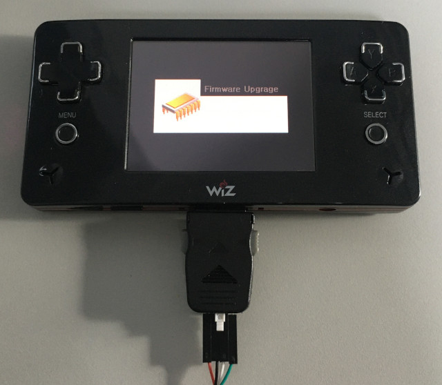
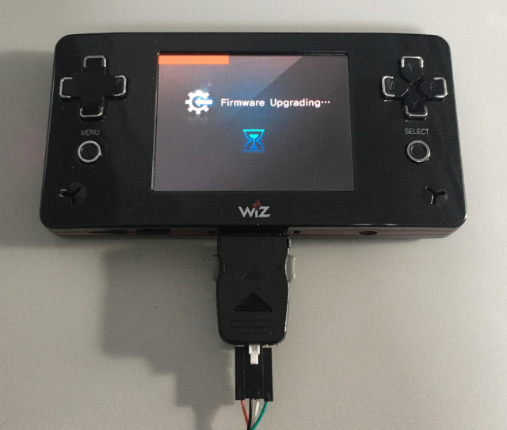
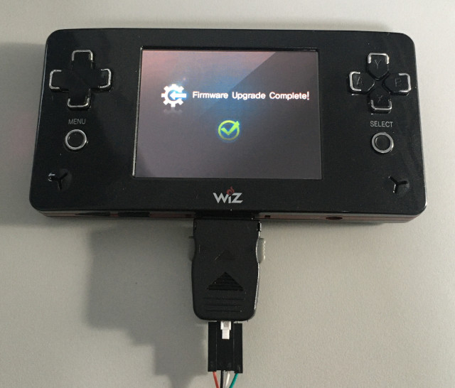

Steward
分享是一種喜悅、更是一種幸福
掌機 - GP2X Wiz - 安裝系統(UART)
安裝步驟：
1. 將I/O Port的第8腳位(CFG BOOTMODE-1)和第9腳位(CFG BOOTMODE-0)連接到GND
2. 準備一張4GB SD並格式化成FAT32(Windows系統下)
3. https://github.com/steward-fu/website/releases/download/wiz/unbrick.7z
4. https://github.com/steward-fu/website/releases/download/wiz/v1.2.6.7z
5. 解壓縮v1.2.6.7z到SD根目錄
6. 連接UART至PC
7. Wiz上電
8. 三秒後，斷開I/O Port的第8腳位、第9腳位與GND的連接
9. 執行MES_DNW_V2.5.exe並設定連接的COM Port、Baudrate 115200bps(Configuration => Options)
10. 傳送UART檔案(Serial Port > Uartboot_16K => UART.nb0)
--------------------------------- -- Welcome to POLLUX UARTBOOT -- --------------------------------- 1. Download NAND.nb0 2. Download MBOOT.nb0 3. Run MBOOT 4. Burning to NAND(must have been downloaded both 1. and 2.) 5. FORMAT NAND Select operation (1~5)
11. 輸入1並傳送NAND檔案(Serial Port => Transmit => NAND.nb0)
Select operation (1~5)1 Now Downloading !! Size : 0x00003000 CheckSum : 0xb5 Calc Sum : 0xb5 1. Download NAND.nb0 2. Download MBOOT.nb0 3. Run MBOOT 4. Burning to NAND(must have been downloaded both 1. and 2.) 5. FORMAT NAND Select operation (1~5)
12. 輸入2並傳送polluxb檔案(Serial Port => Transmit => polluxb)
Select operation (1~5)2 Now Downloading !! Size : 0x00030af0 CheckSum : 0xca Calc Sum : 0xca 1. Download NAND.nb0 2. Download MBOOT.nb0 3. Run MBOOT 4. Burning to NAND(must have been downloaded both 1. and 2.) 5. FORMAT NAND Select operation (1~5)
13. 按住Wiz掌機的R按鈕不放並輸入3


